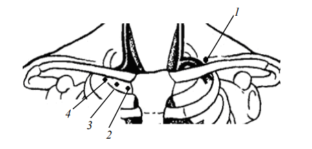

Основные лекарственные препараты, используемые при реанимации и пути их введения.
Пути введения медикаментов при реанимации
- Внутривенный (центральные и периферические)
- Внутрикостный
Нерекомендуемые пути введения:
• Эндотрахеальный
• Внутрисердечное
• Внутриартериальное
• В вены кисти и нижних конечностей
• Внутримышечное и подкожное
Внутривенный путь введения. Лекарственные препараты можно вводить как в периферические, так и в центральные вены. Кроме значительного удаления места введения от точки приложения эффекта, недостатком периферического венозного пути является плохая доступность вен вследствие их спадения. Во время массажа сердца выбирают ту из них, которая лучше всего видна (чаще – в локтевой ямке). Можно использовать также наружную яремную вену, она часто хорошо контурируется при надавливании на область, находящуюся непосредственно над ключицей. Если у пациента имелся венозный катетер, применяют его.
Нельзя прерывать массаж сердца во время попыток венепункции!
При введении препаратов в периферическую вену вслед за болюсом лекарства необходимо ввести 15–20 мл интактного растворителя, например, изотонического раствора хлорида натрия или глюкозы. Это нужно для того, чтобы «протолкнуть» препарат в зону циркуляции крови, поскольку при низких значениях сердечного выброса, наблюдающихся при ЗМС, кровоток в конечностях практически отсутствует. Для венепункции предпочтительнее использовать полиэтиленовый катетер на игле, который можно оставить в сосуде после его пункции и катетеризации. Металлические иглы после введения лекарства оставлять не рекомендуется, поскольку они чаще всего выходят из просвета вены при движениях больного во время массажа сердца.
Центральный венозный доступ имеет свои достоинства и недостатки. Хотя центральные вены (подключичная и внутренняя яремная) гораздо меньше спадаются при остановке сердца, их пункция технически трудна, занимает продолжительное время и чревата серьезными осложнениями. Наиболее оптимальным, по мнению специалистов, выступает надключичный доступ к подключичной вене по Иоффе (рис. 24). Глубина залегания вены при доступе из точки Иоффе составляет 1,5–3,0 см, что позволяет выполнить пункцию и ввести медикаменты с помощью обычного шприца с иглой 4,0 см. Риск ранения легкого или крупных сосудов при пункции такой иглой минимален.
Металлическую иглу после введения препарата следует извлечь. Во время СЛР нецелесообразно пытаться катетеризировать центральную вену мягким катетером, так как это прерывает ЗМС (что гораздо более неблагоприятно, чем отсрочка во введении медикаментов). Кроме того, во время СЛР невозможно обеспечить должное соблюдение правил асептики.
Производить внутривенные инъекции в центральные вены должен только обученный персонал.

Рисунок 24. Точки пункции подключичных вен: 1 – Иоффе; 2 – Джилеса; 3 – Абаниака; 4 – Вильсона
Внутрикостный путь введения. Внутрикостная инъекция лекарственных препаратов в плечевую или большеберцовую кость, обеспечивает адекватную плазменную концентрацию, по времени сравнимую с введением препаратов в центральную вену. Использование же автоматизированных устройств для внутрикостного введения лекарственных препаратов обеспечивает простоту, скорость и доступность данного пути введения.
Метод внутрикостного доступа был впервые предложен Drinker в еще 1922 году как способ достижения системной циркуляции через неспадаемые венозные сплетения костного мозга, однако с появлением внутривенных катетеров был забыт. В 80-х г.г. 20 в. заново внедрен в клиническую практику, главным образом, при мероприятиях сердечно-легочной реанимации:
• 1980 г. – включение внутрикостного доступа в рекомендации по педиатрической реанимации (PALS);
• 2000 г. – рекомендации по использованию внутрикостного доступа при реанимации лиц старше 6 лет (ILCOR);
• 2005 г. – включение внутрикостного доступа в рекомендации по СЛР у детей и взрослых (AHA, ERC).
Преимущества перед другими методиками введения лекарственных средств:
• ВСЕ медицинские препараты и препараты крови, которые назначаются в/в, могут вводится внутрикостно;
• Начало действия и пиковая концентрация лекарственных веществ при внутрикостном введении сравнимы с таковыми при их внутривенном назначении;
• Внутрикостный доступ предпочтительнее эндотрахеального при невозможности быстрой установки в/в доступа;
• Нахождение иглы внутри кости дольше 72 ч повышает риск развития локальной инфекции, поэтому иглу следует удалить, как только установлен постоянный венозный доступ;
• Обучение внутрикостному доступу легко может быть достигнуто после минимальных тренировок;
• Установка внутрикостного доступа занимает меньше времени по сравнению с внутривенным;
• Кровь, полученная после достижения внутрикостного доступа может быть исследована для лабораторных анализов (совместимость по системе AB0, резус-фактору).
Ранее наиболее распространенным методом установки внутрикостного доступа являлся мануальный, в настоящее время набирают популярность автоматизированные устройства (EZ-IO, B.I.G. NIO). Все устройства делятся на механические (B.I.G., NIO) и электрические (EZ-IO - Vidacare) (таблица 3).
Таблица 3. Сравнительная характеристика автоматизированных устройств для внутрикостного введения препаратов.
| Характеристики | BIG | Vidacare |
|---|---|---|
| Принцип действия | Выстреливает иглу за счет пружинного механизма, одноразовое устьройство | Используется электрическая дрель для атравматического проведения иглы, дрель итмеет литиевый необслуживаемый аккумулятор, который расчитан на 1000 манипуляций или 10 лет будет находится в заряженном состоянии. Игла одноразовая находится в стирильном контейнере |
| Глубина установки | Сила выстрела иглы регулируется на самом устройстве по ограничению хода пружины | Определяется самим специалистом по ощущению провала в костномозговой канал, что явялется более безопасным |
| Критерии выбора | По возрасту пациента: детская игла от 0 до 12 лет; взрослая: старше 12 лет; | По весу пациента: детская игла 3-39кг; взрослая > 40 кг. |
| Фиксация | Требует очень тщательной фиксации иглы, часто смещается или выскакивает во время транспортировки пациента и теряет свою функциональность | Дополнительной фиксации у взрослых пациентов во время транспортировки не требуется, для детей есть специальный фиксатор, который надежно защищает иглу от смещения |
| Присоединение к системе для инфузии | Игла имеет стандартный порт Люэра, во время транспортировки возможно отсоединение системы и попадание во внутрикостное пространство воздуха. Необходим очень тщательный контроль за ВКД в течении всего времени транспортировки пациента | Игла имеет накручивающийся порт, в наборе с иглой идет специальный переходник для подсоединения в/к иглы и в/в системы с предохранительным клапаном от засасывания воздуха, что обеспечивает надежное соединение и безопасную инфузию растворов |
| Удаление иглы | Необходимо использовать дополнительный инструмент (зажим) | Удаляется с помощью накручивающегося шприца, который идет в комплекте с каждой иглой |
| При неудачной установке | Необходимо брать новое устройство | Можно использовать туже иглу на другой конечности |
| Ослажнения установки | Пробивание кости насквозь (особенно у маленьких детей), вколоченные переломы, паутинообразное повреждение надкосницы (дополнительные ворота для инфекции). Возможно повреждение руки специалиста, который обеспечивает ВКД | Запатентованная заточка иглы позволяет не повреждать надкосницу, остается маленькое отверстие, которое после удаления иглы закрывается окружающими тканями (ворот для инфекции) |
| Боль при установке | Зачастую более 5 балов по ВАШ | 2-4 балла по ВАШ |
Наиболее распространенной точкой для введения иглы является проксимальный отдел большеберцовой кости (плоская широкая поверхность, тонкий слой мягких тканей, далеко от дыхательных путей и грудной клетки). Альтернативными точками являются бугорок плечевой кости, медиальная лодыжка, дистальная часть лучевой кости (рис 25).